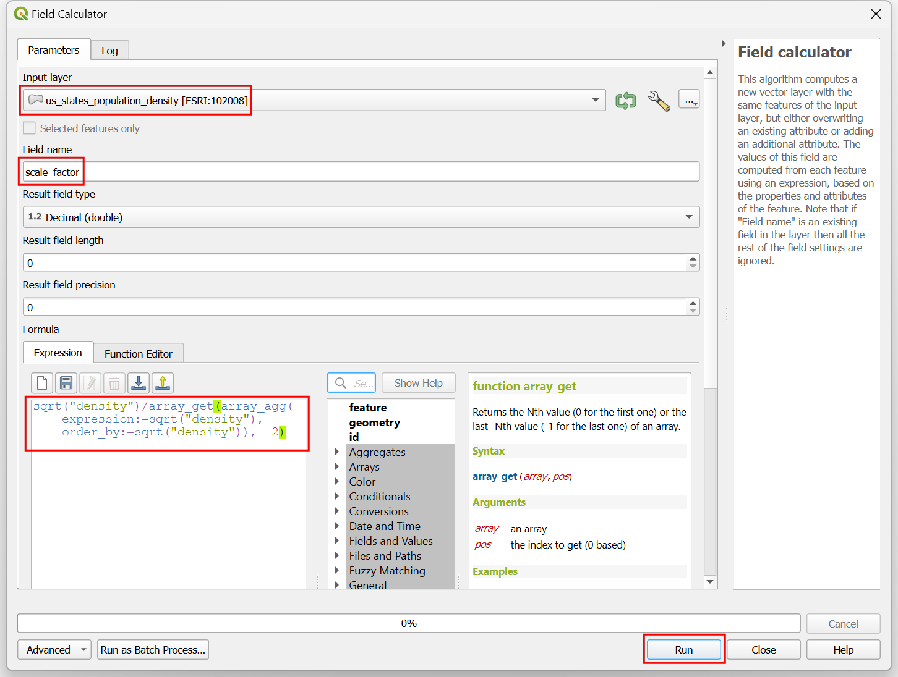
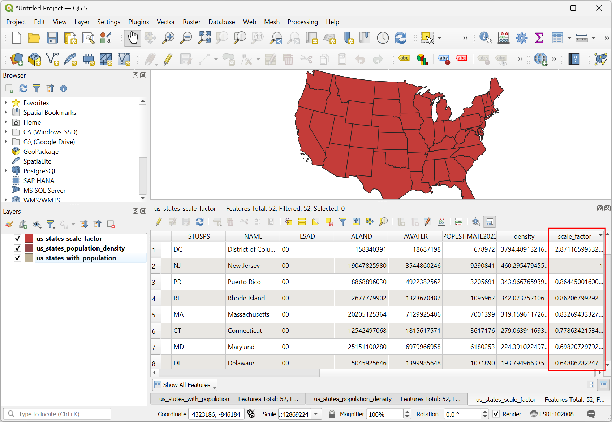
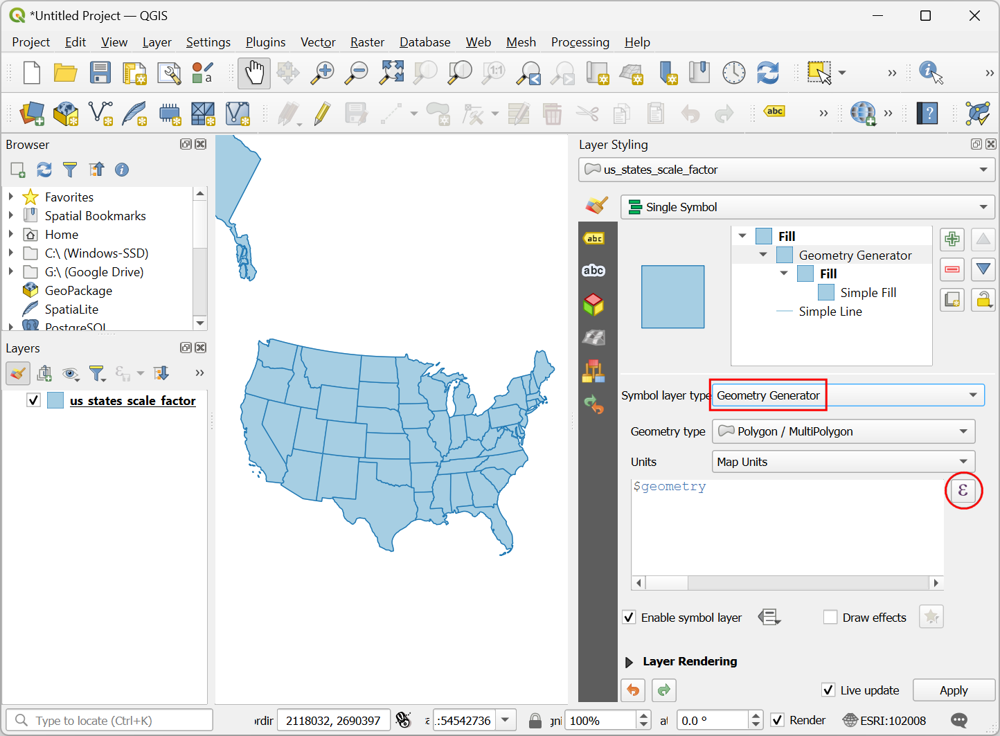
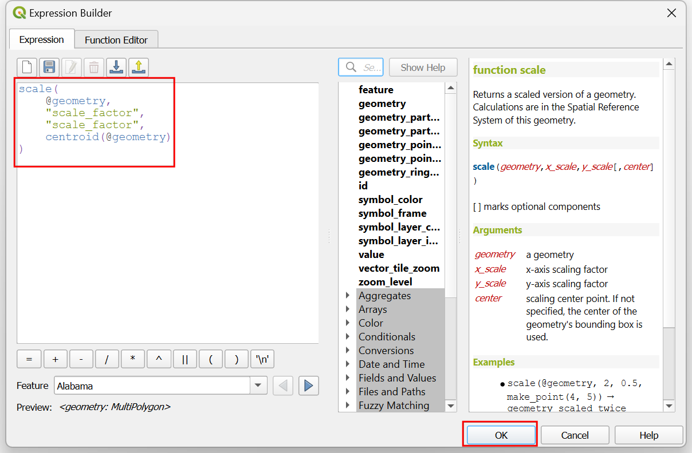
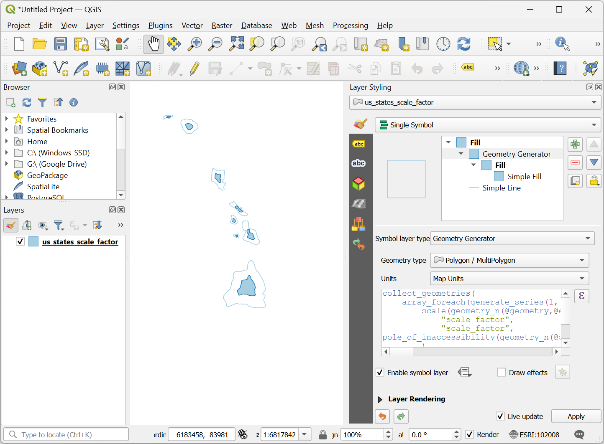
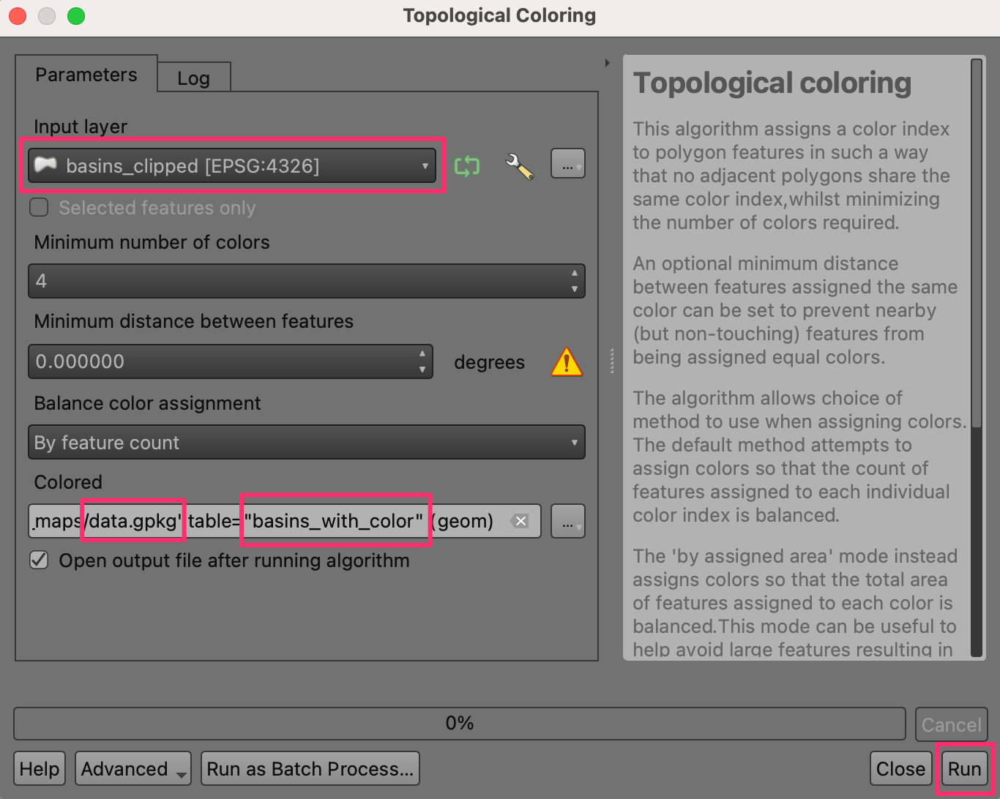
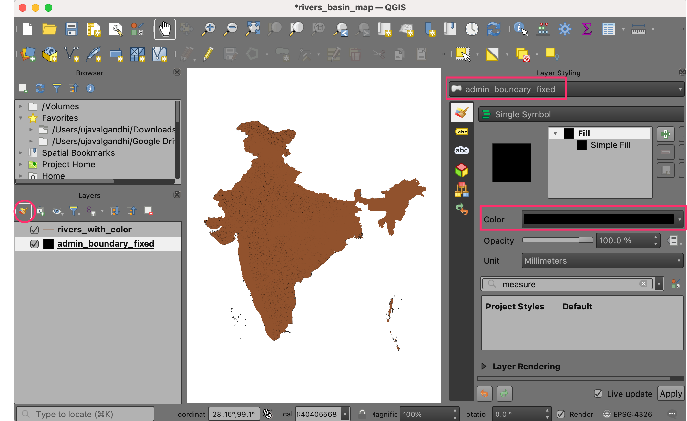
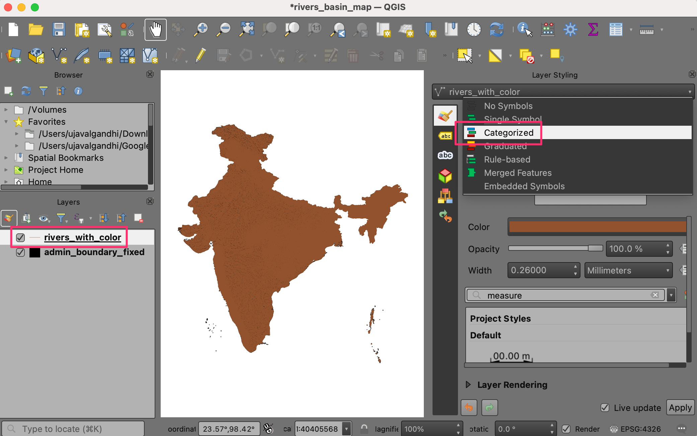

Crearea Hărților Calorice (QGIS3)¶
Heatmaps are one of the best visualization tools for dense point data. Heatmap is an interpolation technique that useful in determining density of input features. Heatmaps are most commonly used to visualize crime data, traffic incidents, housing density etc. QGIS has a heatmap renderer that can be used to style a point layer and a Processing algorithm Heatmap (Kernel Density Estimation) that can be used to create an raster from a point layer.
Privire de ansamblu asupra activității¶
Vom lucra cu un set de date al locațiilor infracțiunilor din Surrey, Marea Britanie pentru anul 2011 și vom identifica zonele fierbinți ale criminalității din ținut.
Alte competențe pe care le veți dobândi¶
Using virtual fields and conditional expressions
Obținerea datelor¶
data.police.uk provides street-level crime, outcome, and stop and search data in simple CSV format. Download the data for Surrey Police and unzip the downloaded archive to extract the CSV file.
Pentru comoditate, puteți descărca o copie a datelor, făcând clic pe link-ul următor:
Sursa de date [POLICEUK]
Procedure¶
We will first load a basemap layer from OpenStreetMap and then import the CSV data. In the Browser tab, scroll down and locate the XYZ Tiles section.

Expand it to see the OpenStreetMap tile layer. Drag and drop it to the main canvas. Next we will load the CSV file. Click the Open Data Source Manager button.

Switch to the Delimited Text tab. Here we will import the crime data which comes in a CSV format text file. Click the … button next to File name and browse to the downloaded
2019-02-surrey-street.csvfile. The X field and Y field in the Geometry Definition section to be auto-populated with theLongitudeandLatitudecolumns. The Geometry CRS should be left to defaultEPSG:4326 - WGS 84definition. Make sure the data looks correct in the Sample data panel and click Add, followed by Close.

You will see 2 layers -
OpenStreetMapand2019-02-surrey-streetloaded in the QGIS Layers panel. Right-click the2019-02-surrey-streetlayer and select Zoom to Layer.

You will see the crime incident points layer overlaid on the OpenStreetMap basemap. Zoom and Pan to explore the data. The data is quite dense and it is hard to get an idea of where there is a high concentration of crime. This is where a heatmap visualization will come in handy. Select the
2019-02-surrey-streetlayer and click the Open the Layer Styling panel button.

Select
Heatmapas the renderer in the dropbox menu. The Layer Styling panel is interactive and you can see the effect of your changes reflected in the canvas immediately. The layer will now be displayed in the default grayscale color-ramp.

A heatmap is typically renderer using a yellow–to-red or white–to-red color ramp where higher concentration of points result in more heat. Click the Color ramp dropdown menu and select
Redscolor-ramp.

Next you need to choose a Radius. This parameter determines the circular neighborhood around each point where that point will have an influence. This value will largely depend on the type of your input data. For our data, let’s assume a crime incident will have an influence upto 5 Kilometers from the location. Notice that the current project CRS is set to
EPSG: 3857in the bottom-right corner. This CRS has a unit of meter, so we should specify5000meters as the radius. Another parameter that is hidden from this menu is the Kernel shape. This is a function that determines how the influence of a point should be spread out over the given radius. The Heatmap renderer uses theQuarticfunction for this calculation. There are other types of kernels such asTriangular,Uniform,TriweightandEpanechnikovthat can be specified in when using a different heatmap creation method described later in this tutorial. See this post for a good explanation and guidance for select the right radius and kernel shape.

The heatmap visualization is ready. We can adjust the Opacity of the heatmap in the Layer Rendering section at the bottom. Set the opacity to
60 %so you can see the basemap along with the heatmap.

For many types of analysis, just considering density of points is good enough. But sometimes, you may want to give different importance to each point. A more violent crime should have more influence on the output heatmap than a robbery. Similarly, sometimes a point may represent multiple observations at a single location which needs to be accounted for in the analysis. To do this, you are able to supply an optional numeric weight field which specifies a value for each point. Let’s add a weight field and use it to improve the heatmap. Right-click the
2019-02-surrey-streetlayer and select Open Attribute Table.

You will see a text field called
Crime typein the input data that describes the type of crime. We can use these to categorize the different types of crimes and assign a higher weight to more violent crimes.

Click the Open field calculator.

We will now input a formula that uses the
Crime typeand determines the weight value. QGIS has a handy way to add such computed fields using Virtual Fields. The virtual field is saved in the QGIS project and doesn’t modify the source data. It is also dynamically computed and can be used anywhere in QGIS just like any other attribute value. Enterweightas the Output field name and set the Output field type toWhole number (integer). Enter the following expression in the Expression editor. Here we are using CASE statement to assign different values based on different conditions. Click OK.
CASE WHEN "Crime type" LIKE 'Violence%' THEN 10 WHEN "Crime type" LIKE 'Criminal%' THEN 5 ELSE 1 END
A new attribute will be added for each feature with the appropriate weight value.

Back in the Layer Styling panel, click the drop-down menu for Weight points by and select the newly added
weightfield.

You will see the heatmap rendering change to account for the weight parameter. Close the Layer Styling panel.

If you need the heatmap visualization to be saved as a permanent raster layer or want to customize the heatmap with advanced options such as different kernels or dynamic radius, you can use the Heatmap (Kernel Density Estimation) from the Processing Toolbox. We will now use this algorithm. Go to .

Before we can create the heatmap, we need to re-project the source data to a projected CRS. As distance plays an important role in computation of heatmap, it is not correct to use a geographic CRS. Search and find the algorithm.

In the Reproject layer dialog, click the Select CRS button for Target CRS. Search for and select the
EPSG:27700 OSGB 1936 / British National GridCRS. This projected CRS is a good choice for data in the UK. Click Run.

A new layer named
Reprojectedwill be added to the Layers panel. Un-check the box next to the old2019-02-surrey-streetlayer to hide it.

Search and find the algorithm.

In the Heatmap (Kernel Density Estimation) dialog, we will use the same paramters as earlier. Select Radius as
5000meters and Weight from field asweight. Set the Pixel size X and Pixel size Y to50meters. Let the Kernel shape to the default value ofQuartic. Click Run.

Notă
The Radius from field parameter allows you to specify a dynamic search radius for each point. This can be used along with Weight from field to have fine grainer control on how each point’s influence is spread.
Once the processing finishes, a new raster layer named
OUTPUTwill be loaded. The default visualization is ugly since it uses theSingleband grayrenderer. Click the Open the Layer Styling panel button.

Change the render to
Singleband Pseudocolorand select theRedscolor ramp. The layer now looks like the heatmap visualization that we had created earlier.

Notă
Notice that OUTPUT layer in the Layers panel has a legend but the 2019-02-surrey-street layer does not. A common problem with using a heatmap layer created with the Heatmap renderer is the lack of a legend. Say you want use the heatmap in the Print Layout and add a legend. A raster heatmap created with the Heatmap processing algorithm method makes this possible.
If you want to give feedback or share your experience with this tutorial, please comment below. (requires GitHub account)